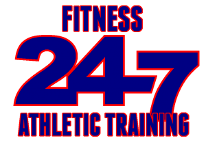
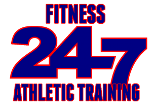

Welcome To 247 Fitness
247 Mission
The purpose of 24/7 Fitness & Athletic training is we not only believe in getting the body healthy and fit, but
"That the GOD of Peace Himself (Jesus Christ) sanctify you completely and may your whole spirit, soul and body be preserved blame less at the coming of our Lord Jesus Christ."
247 Fitness & Athletic Training has something for everyone. From the season trainer or beginner, we have equipment to fit 8yrs old to 100. We offer a full line of cardio, treadmills, ellipticals, steppers, dumbells, tires and anything to meet your personal training needs as well as food and nutrition programs. 24/7 is the place for anyone
Staff
James Benfield
18 Years At 247 Fitness
Email: jabenfield98@yahoo.com
Phone: 828-896-1674
James is a certified master trainer with 40 years experience in personal training. Our personal training comes with money back guaranteed results. James is a member of the American College of Sports Medicine of Fitness Professionals; is International Weightlifting Association (IWA) certified; was the sports trainer for Robert Yates Racing at the Winston Cup level for five years where they won a championship in 1999, and pit crew of the year in 2002, with an average crew age of 40 years old. James was also the chaplain/strength coach for Lenoir Rhyne University football team for three years.
James has had success with thousands of average people, getting the results they desired. The average loss per week is 2 - 5 pounds plus 5 inches, with many having results in the 8 - 12 inch loss range in one week. James is the only personal trainer in the Hickory Metro area that has the backing of the medical community.
Sam Benfield
5 Years At 247 Fitness
High school carrier. Avg 8.9 yards a carry. 4.5sec 40 yard dash. 40 inch vertical. Shrine Bowl combine record, benching 185 a total of 31 times as a running back. Named elite athlete in National Underclassmen Combine.
Facilities
Cardio Machines
- List Machines
- All Of Them
- At Least All We Can
Weight Machines
- List Weights
- All Of Them
- At Least All We Can
Free Weights
- List Weights
- All Of Them
- At Least All We Can
Miscellaneous
- List Weights
- All Of Them
- At Least All We Can
XXXX Square Feet
Over XX number of machines
24/7 Survalence & Security
Male & Female Lockerrooms
Offers Protien Shakes / Drinks
$XX,XXX+ amount of equiptment
Memberships
Prices Graphic Will Go Here
Personal / Sports Training
Training for Anyone & Everyone
247 Fitness offers personal training and specialized sports training to help you get a college scholarship. James is a master-level trainer with over 40 years of experience training everyone from seniors, youth, to athletes of all shapes and sizes. James has guarenteed results from his personal training that will show in your body and more importantly your performance. Over the course of his career he has trained over XX athletes from all kinds of sports and XX of those kids have went on to play at the next level.
Lucas Clarke
"James helped me add not only strength, but also flexibility. He increased my stride by nearly 1/2 a foot and added explosion to my delivery which took my fastball in high school from low 80's to upwards of 87mph, and ultimately led me to playing at the Division I level for UNC-Asheville with a 90mph fastball. James trains smart, safe and specific to your sport and position to help you play at the next level. Not to mention he knows how to push you to your full potential."
- Lucas Clarke